Locații de nuntă în județul Constanța
- locații în director
- 75
- cu cazare în registrul SITUR
- 17
- medie ponderată Google
- 4,3 / 5
- evaluări Google
- 53.851
Cum alegi unde mergi la vizionare
Pe litoral, eticheta stațiunii vă ajută să alegeți unde vor sta invitații. Comparați adresele din Eforie Nord, Mamaia și Vama Veche, apoi întrebați operatorul dacă zona exterioară se rezervă exclusiv. Accesul la plajă, o terasă și o grădină de ceremonie sunt amenajări diferite.
La Ana Hotels Europa, în Eforie Nord, descrierea operatorului leagă ceremonia și recepția de grădina hotelului. Pentru Mamaia, una dintre variantele de comparat este terasa cu piscină. Dacă invitații se cazează la alt hotel, explicați de la ce intrare se ajunge la masa festivă, mai ales când intrarea către plajă și cea a salonului duc în direcții diferite.
Două adrese pentru o zi de vizionări
Pe hartă, între aceste două proprietăți sunt 4,3 km în linie dreaptă. Deschide indicațiile de drum din fișe ca să vezi traseul pe șosea înainte de a stabili a doua întâlnire.
- Aybo Garden · Strada Pelicanului nr. 20-22, 907015 Agigea
- Complex Galla Ballroom · DN39, 907016 Constanța
Spații exterioare menționate de operatori
- Ana Hotels Europa · Cununie și recepție de nuntă în grădină
- Diplomatic Mamaia · Petrecere privată pe terasă
- EGO Ballroom Mamaia · Terasă și bar cu piscină pentru petreceri
Explorează după localitate
Toate locațiile din județul Constanța
Ordinea ține cont de nota Google și de numărul evaluărilor. Cum calculăm ordinea
Hartă ilustrată Constanța · Centru de evenimente
MarAnna Events - Spatiu Petreceri Private si Evenimente Constanta
MarAnna Events - Spatiu Petreceri Private si Evenimente Constanta. Un alt grup își amintește karaoke și dans la un eveniment pentru adolescenți.
Strada Ecaterina Varga 17, 900746 Constanța+40 758 237 261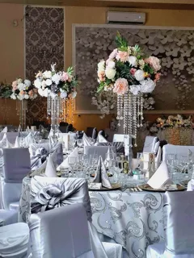
Fotografie a locației · Sursa fotografiei Constanța · Local pentru evenimente
Ardealul Restaurant Evenimente & Catering Constanta
Restaurant și sală de evenimente în Constanța, cu salon de până la 180 de persoane și catering. Nota 4,9 din 235 de evaluări; ce să întrebi.
Strada Oborului 38, 900162 Constanța+40 726 706 920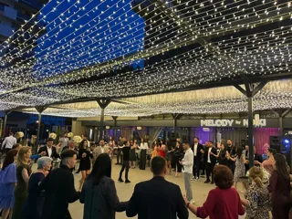
Fotografie a locației · Sursa fotografiei Constanța · Restaurant
Melody By Nikki Events - Restaurant Nunta Constanta
Melody By Nikki Events - Restaurant Nunta Constanta. Pentru o cerere nouă, merită să ceri fotografii ori o schiță dintr-o cununie cu un format asemănător.
Bulevardul Mamaia 418A, 900590 Constanța+40 728 902 516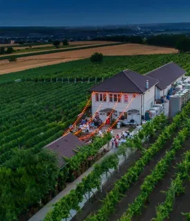
Fotografie a locației · Sursa fotografiei Valu lui Traian · Cramă
Crama Gabai
Cramă din Valu lui Traian cu nota 4,9, unde proprietarii conduc degustările. Bună pentru o seară cu nașii sau pentru vinul de nuntă; evenimente neconfirmate.
Strada Complexului, 907300 Valu lui Traian+40 755 140 492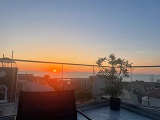
Fotografie a locației · Sursa fotografiei Constanța · Hotel
Tomis Dreams
Tomis Dreams, Constanța. Dacă plănuiți un moment intim pe terasă, merită să verificați calendarul centrului Constanței pentru data aleasă.
Strada Sulmona 30, 900178 Constanța+40 722 132 367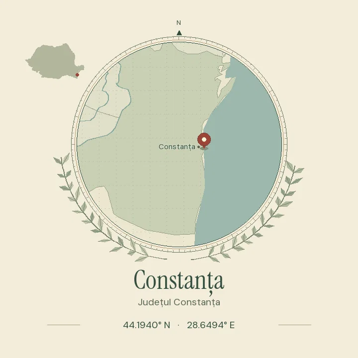
Hartă ilustrată Constanța · Restaurant cu specific românesc
Harlequin Express
Restaurant cu specific românesc în Constanța, nota 4,8 din 469 de evaluări: fasole, creveți, papanași lăudați, servire inegală. Bun pentru o masă mică.
Strada Vasile Lucaciu 2, 900001 Constanța+40 757 778 777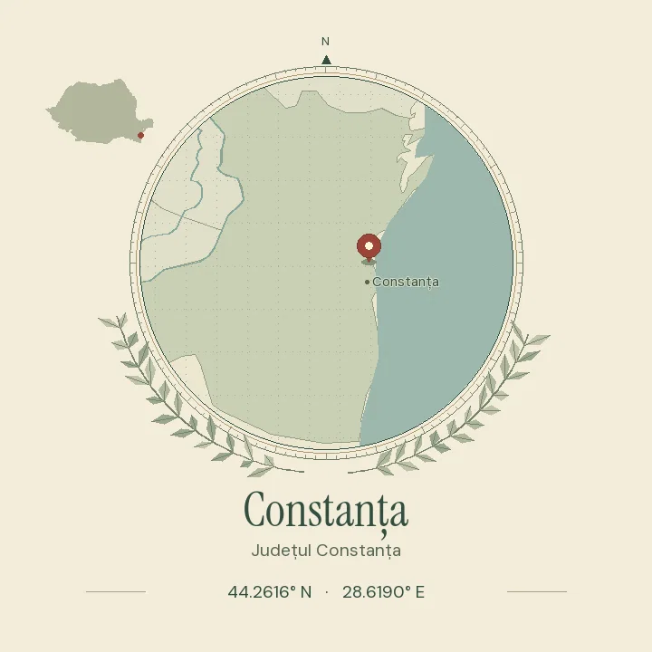
Hartă ilustrată Constanța · Local pentru evenimente
Kupolla Events
Kupolla Events, Constanța. Sala este prezentată cu ringul central și mesele dispuse în jur, văzute de la nivel superior.
Mamaia Restaurant Ambasador Sala Polivalenta, 900001 Constanța+40 722 228 236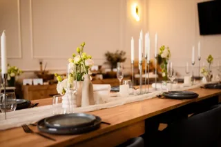
Fotografie a locației · Sursa fotografiei Constanța · Centru de evenimente
Urban Hub Constanta
Urban Hub Constanta, Constanța. O nuntă de august la Urban Hub oferă un reper rar de concret pentru Constanța.
Strada Ioan D. Chirescu 16, 900178 Constanța+40 727 318 689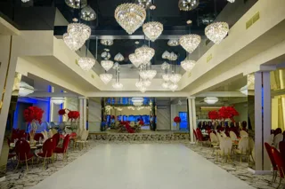
Fotografie a locației · Sursa fotografiei Constanța · Restaurant
Nimazi by Nikki Events
Nimazi by Nikki Events. La Nimazi, fotografia salonului arată o zonă centrală liberă, încadrată de scaune roșii și corpuri de iluminat suspendate.
Zona Hotel Rex Mamaia, corp C2, 900001 Constanța+40 728 902 516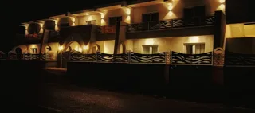
Fotografie a locației · Sursa fotografiei Vama Veche · Cazare în regim hotelier
Waves
Waves. Pentru un weekend la Vama Veche, trimite celor care conduc un punct de oprire și o alternativă pentru parcare înainte să ajungă în stațiune.
sat, Strada Mihail Kogălniceanu Nr 50, 907163 Vama Veche+40 743 335 130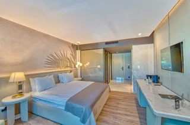
Fotografie a locației · Sursa fotografiei Constanța · Hotel
Duman Hotel Constanța
Hotel pe Bulevardul Mamaia cu piscină exterioară, grădină și restaurant cu gust turcesc, nota 4,8 din 53 de evaluări.
Bulevardul Mamaia 900001, 900001 Constanța+40 733 777 001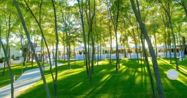
Fotografie a locației · Sursa fotografiei Agigea · Sală de nunți
Aybo Garden
La Aybo Garden în Agigea, cununia are loc pe gazon sub salcâmi. Vezi numărul minim de invitați pentru fiecare zi, meniurile și ce include camera miresei.
Strada Pelicanului nr. 20-22, 907015 Agigea+40 785 203 576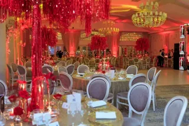
Fotografie a locației · Sursa fotografiei Constanța · Restaurant familial
En Provence Restaurant
Grădină de 1.000 m² pentru cununie și cocktail, între Constanța și Ovidiu; 4,7 din 1.182 de evaluări, multe de la nunți recente.
B-dul Tomis. 500A, Constanta (intre Constanța și Ovidiu, 900002 Constanța+40 726 694 097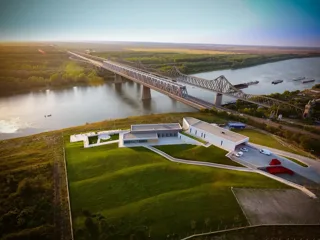
Fotografie a locației · Sursa fotografiei Cernavodă · Cramă
Crama Rasova
Cramă pe deal la Cernavodă, cu priveliște spre Dunăre și pod, degustări și evenimente în vie. Ce să întrebi despre capacitate și catering pentru o nuntă.
905200 Cernavodă+40 720 737 777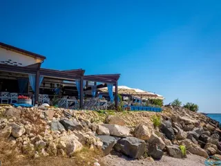
Fotografie a locației · Sursa fotografiei Eforie Nord · Hotel
Blue Sky Hotel Eforie Nord
Blue Sky Hotel Eforie Nord, Eforie Nord. La Blue Sky Hotel, un oaspete descrie un sejur liniștit și primirea atentă a gazdelor.
Strada Meduzei 1, 905350 Eforie Nord+40 739 914 704Hartă ilustrată Constanța · Local pentru evenimente
Royal Ballroom
Un invitat de la Royal Ballroom din Constanța își amintește o revedere de familie cu muzică tătărească și turcească interpretată de o formație.
Bulevardul I. C. Brătianu 28, 900178 Constanța+40 744 101 050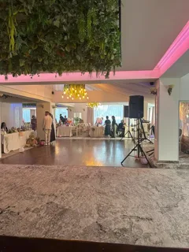
Fotografie a locației · Sursa fotografiei Constanța · Local pentru evenimente
Dobrogea Events
Dobrogea Events, Constanța. O persoană povestește în 2026 că a discutat direct cu organizatoarea detaliile care contau pentru familia sa.
Bulevardul Alexandru Lăpușneanu 194, 900001 Constanța+40 724 958 385Hartă ilustrată Constanța · Local pentru evenimente
The Living Room Constanta / Atelier 19 vintage store
The Living Room Constanta / Atelier 19 vintage store. Pentru o cununie restrânsă, experiența arată că merită să ceri o vizionare pentru un eveniment privat.
Strada Siretului 19, 900178 Constanța+40 774 095 272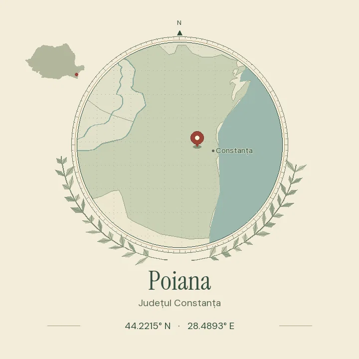
Hartă ilustrată Poiana · Local pentru evenimente
Poiana Events
Într-o recenzie despre Poiana Events este discutat volumul muzicii după ora zece seara, însă autorul prezintă informația ca pe ceva auzit.
Strada Condurului 3, 907246 Poiana+40 738 210 723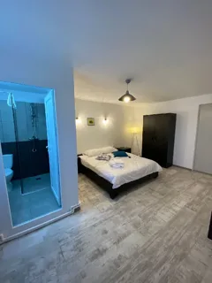
Fotografie a locației · Sursa fotografiei Vama Veche · Hotel
Vama Stone House
Vama Stone House, Vama Veche. Pentru familii care vor și terasă, și somn după petrecere, tocmai relația dintre cele două contează.
Strada Tudor Vladimirescu 21, 907163 Vama Veche+40 743 040 800
Fotografie a locației · Sursa fotografiei Eforie Nord · Restaurant
Terasa cu Ancore
Un oaspete care a luat masa cu familia la Terasa cu Ancore își amintește de servirea personală și de atmosfera serii.
Strada Armand Călinescu 34, 905350 Eforie Nord+40 765 138 484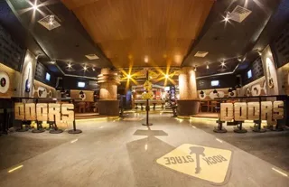
Fotografie a locației · Sursa fotografiei Constanța · Local pentru evenimente
Doors Club
Club cu concerte, expoziții și terasă pe strada Traian din Constanța, 4,6 din 1.936 de evaluări. Site-ul pomenește nunți: ce să întrebi.
Strada Traian nr. 68A, 900716 Constanța+40 763 661 622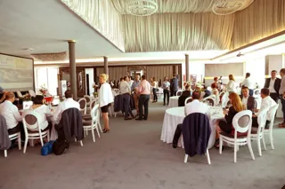
Fotografie a locației · Sursa fotografiei Constanța · Sală de nunți
Diplomatic Mamaia
Diplomatic Mamaia, Constanța. O participantă își amintește că unele mame au alăptat în restaurant și că au fost copii care au adormit pe scaune.
900001 Constanța+40 790 000 326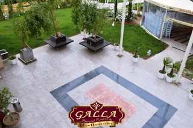
Fotografie a locației · Sursa fotografiei Constanța · Local pentru evenimente
Complex Galla Ballroom
Pe DN39, Constanța: salon de 400 de locuri, terasă de ceremonii pentru 30–40 de invitați și grădină de 1.500 m². Nunți lăudate în recenzii.
DN39, 907016 Constanța+40 722 287 491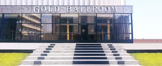
Fotografie a locației · Sursa fotografiei Constanța · Local pentru evenimente
Grand Ballroom Melody
O descriere a Grand Ballroom Melody din partea unui vizitator insistă pe lobbyul de primire și pe locul amenajat pentru fotografii înainte de intrarea în salon.
Bulevardul Mamaia, 900139 Constanța+40 732 598 792Hartă ilustrată Constanța · Hotel
Villa Edel Constanta
Villa Edel Constanta. Pentru o nuntă organizată în oraș, informațiile o recomandă spre evaluare mai ales ca punct de cazare și întâlnire al familiei.
Str. George Enescu 30B, 900178 Constanța+40 746 050 511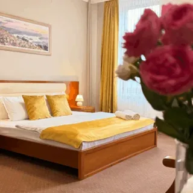
Fotografie a locației · Sursa fotografiei Constanța · Hotel
Vila Central
Vila Central. Un client al Vilei Central estimează că a mers pe jos cam zece minute până la Plaja Modern și amintește că a găsit parcare pe străzile alăturate.
Strada Ștefan cel Mare 19, 900726 Constanța+40 730 171 372Hartă ilustrată Constanța · Hotel
Mav City Boutique
Mav City Boutique. Un oaspete descrie o cameră modernă, spațioasă și liniștită, iar prezentarea din Constanța enumeră grădina, terasa și piscina de afară.
Strada Petru Vulcan 70, 900572 Constanța+40 770 337 365Fotografie a locației · Sursa fotografiei Constanța · Restaurant
Restaurant Nunti Constanta - Nevada By Nikki Events
Restaurant Nunti Constanta - Nevada By Nikki Events. În imaginea salonului, mesele rotunde cu flori încadrează o suprafață liberă luminată în violet.
Bulevardul Aurel Vlaicu 311, 900001 Constanța+40 728 902 516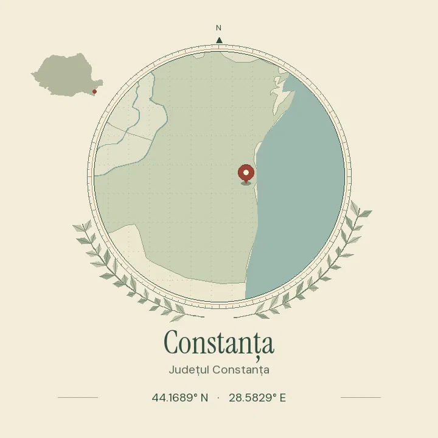
Hartă ilustrată Constanța · Hotel
Pensiune 173 Acasă
Pensiune 173 Acasă, Constanța. La 173 Acasă, numărul din denumire ajută chiar la găsirea adresei de pe Bulevardul I.
Bulevardul I. C. Brătianu 173, 900316 Constanța+40 720 063 940
Fotografie a locației · Sursa fotografiei Eforie Nord · Hotel
Aqvatonic Balneo Spa - Steaua de Mare
Hotel cu spa și piscină interioară în Eforie Nord, 3.519 de evaluări: ce laudă oaspeții, ce reclamă și ce să întrebi pentru cazarea invitaților.
Bulevardul Tudor Vladimirescu 39-43, 905350 Eforie Nord+40 341 447 555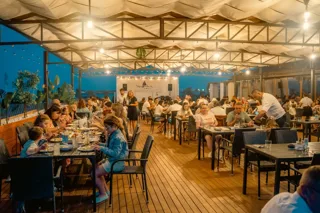
Fotografie a locației · Sursa fotografiei Eforie Nord · Restaurant
Sailors
La Sailors, un mesean recomandă ciorba de pește și își amintește două platouri comandate pentru a fi împărțite, Marea Neagră și fritto misto.
Marina, Aleea Belona, 905350 Eforie Nord+40 773 755 392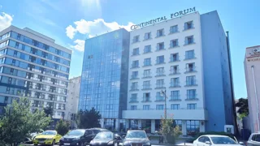
Fotografie a locației · Sursa fotografiei Constanța · Hotel
Hotel Continental Forum Constanta
Hotel Continental Forum Constanta, Constanța. A stat într-o cameră cu vedere frontală către mare și a folosit parcarea din fața hotelului.
Strada Mircea cel Bătrân 39B-41, 900658 Constanța+40 241 508 050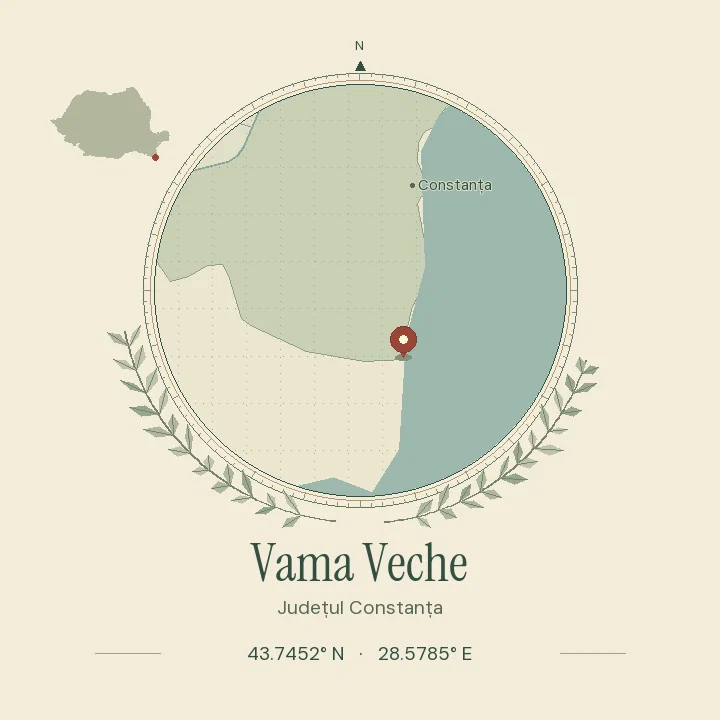
Hartă ilustrată Vama Veche · Hotel
OK by Ovo
La OK by Ovo, un oaspete descrie camere cu vedere la mare, o grădină cu flori și pisici, muzică în surdină și micul dejun tip bufet.
Str. Falezei NR. 80, 907163 Vama Veche+40 722 777 767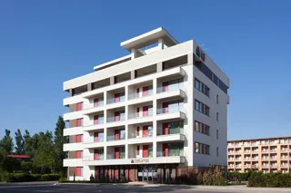
Fotografie a locației · Sursa fotografiei Constanța · Local pentru evenimente
Grădina Tomis
Grădina Tomis. Un participant plasează aici, în Parcul Arheologic, un festival de teatru cu trupe de adolescenți și tineri la sfârșit de august.
Parcul Arheologic, Strada Titorian, Institutor, Nr 11, 900526 Constanța+40 736 677 133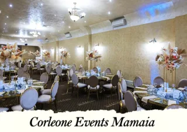
Fotografie a locației · Sursa fotografiei Constanța · Sală de nunți
Don Corleone Events
Don Corleone Events, Constanța. Pentru o nuntă cu muzicieni live, cereți să vi se arate poziția folosită de formație față de ring.
900001 Constanța+40 755 204 254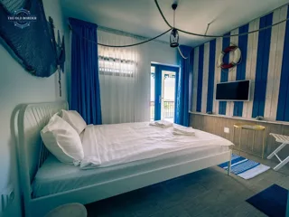
Fotografie a locației · Sursa fotografiei Vama Veche · Hotel
The Old Border
The Old Border, Vama Veche. Pentru o reuniune în Vama Veche, luați în calcul o masă de probă înainte de a rezerva cazarea tuturor.
Strada Zenitului, 907163 Vama Veche+40 724 568 172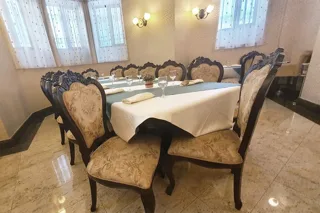
Fotografie a locației · Sursa fotografiei Constanța · Hotel
Hotel Carol
Dacă luați apartamentul pentru pregătirile mirilor, cereți să vedeți spațiul de la fereastră și unde pot sta fotograful, coafeza și rudele care vă însoțesc.
Strada Mihail Kogălniceanu 15, 900178 Constanța+40 241 552 100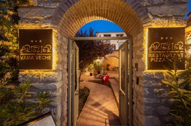
Fotografie a locației · Sursa fotografiei Vama Veche · Hotel
Artelier
Hotel mic în Vama Veche, la circa 150 de metri de plajă, cu restaurant și terasă. Camere curate, păreri împărțite despre micul dejun.
Strada Albatros 16a, 907163 Vama Veche+40 722 121 737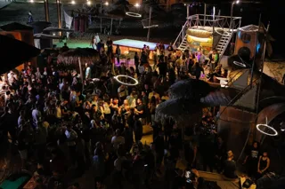
Fotografie a locației · Sursa fotografiei Vama Veche · Hotel
Amphora
Cere să ți se arate un traseu potrivit pentru rudele care nu pot urca ușor și o alternativă la adăpost dacă vântul ar face dificilă servirea în exterior.
Strada Falezei 36, 907163 Vama Veche+40 722 254 932Hartă ilustrată Constanța · Restaurant cu specific european
Harlequin
La Harlequin, un client care a revenit de-a lungul mai multor ani vorbește despre varietatea meniului și despre porțiile generoase.
Bulevardul Mamaia, 900001 Constanța+40 724 412 414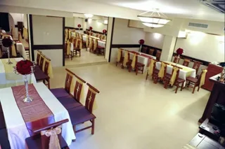
Fotografie a locației · Sursa fotografiei Constanța · Centru de evenimente
Adrys Salon Evenimente
Adrys Salon Evenimente, Constanța. Un mesean își amintește îndeosebi somonul și spune că servirea a ținut pasul cu restul serii.
Str. Locotenent Gheorghe Economu 30, 900554 Constanța+40 724 855 811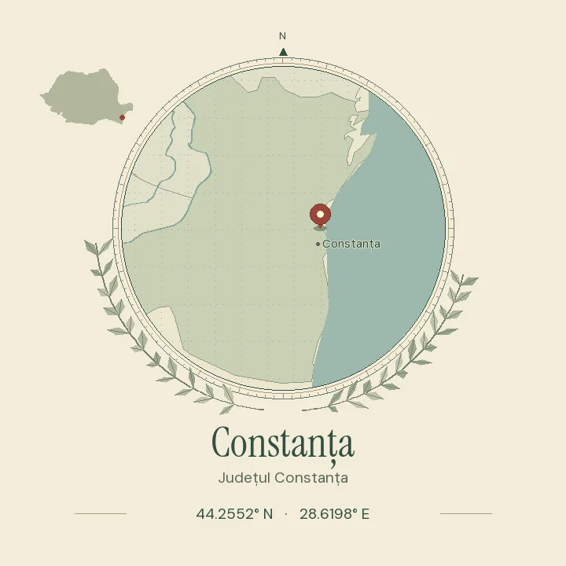
Hartă ilustrată Constanța · Local pentru evenimente
Restaurant Dorna
Restaurant Dorna, Constanța. Un părinte amintește spectacolul caritabil de colinde la care au participat aici copiii unui studio de dans.
Bd. Mamaia, 900001 Constanța+40 799 011 953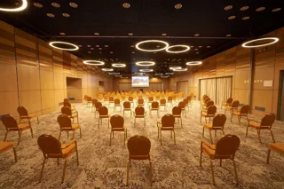
Fotografie a locației · Sursa fotografiei Eforie Nord · Hotel
Ana Hotels Europa
Hotel în Eforie Nord cu grădină de vară pentru cununii și recepții; 240 de locuri în sălile interioare, piscine, spa și acces la plajă.
Bulevardul Republicii 13, 905350 Eforie Nord+40 241 702 801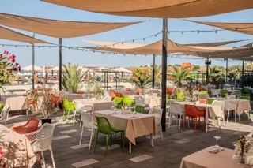
Fotografie a locației · Sursa fotografiei Constanța · Hotel
Hotel Malibu Mamaia
Hotel Malibu Mamaia. La Malibu Mamaia, terasa, piscina exterioară, locul de joacă și restaurantul pot interesa persoane diferite din aceeași familie.
Bulevardul Mamaia Nr.316, 900001 Constanța+40 241 831 404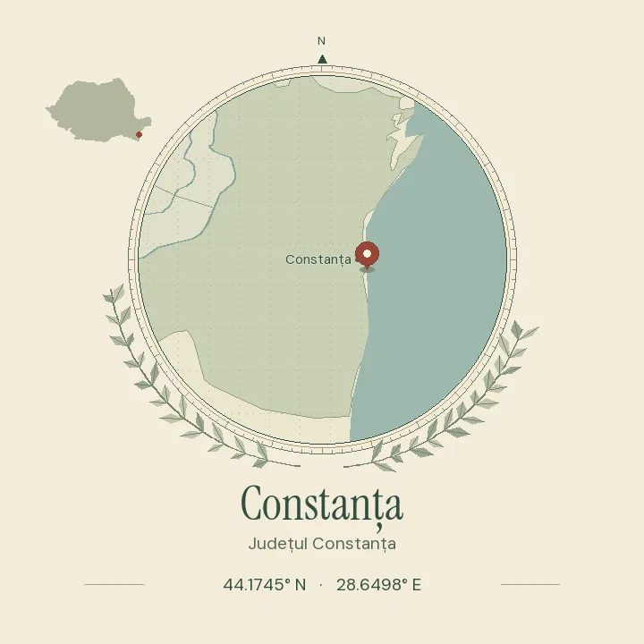
Hartă ilustrată Constanța · Local pentru evenimente
Luxor Ballroom Restaurant Nunti,Botezuri Constanta.Salon Nunti.Meniu Nunta,Botez Constanta
Cum numele din Maps include mai multe tipuri de servicii, la o cerere de ofertă merită trecută denumirea salonului și adresa precisă.
Strada Traian 53, 900725 Constanța+40 721 229 982Hartă ilustrată Constanța · Local pentru evenimente
EGO Ballroom Mamaia
Club de vară și sală de nunți în extrasezon pe Aleea Lamia, Mamaia, cu terasă și piscină. Recenziile cer atenție la meniuri și organizare.
Aleea Lamia, Constanța+40 726 202 272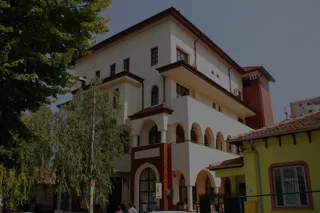
Fotografie a locației · Sursa fotografiei Constanța · Hotel
Curtea Brâncovenească
Hotel modest cu restaurant românesc lângă plaja Modern din Constanța, cu 1.291 de evaluări. Recenzii mixte despre camere și un restaurant închis în weekend.
zona Capitol, Strada Vasile Lupu 43-45, 900614 Constanța+40 241 511 055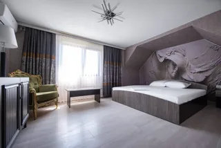
Fotografie a locației · Sursa fotografiei Vama Veche · Restaurant
Grand Taverna Boutique
Cazare pe strada Albatros din Vama Veche, lângă plajă: camere curate, geamuri care țin zgomotul afară, nota 4,2. Evenimentele nu sunt documentate.
Strada Albatros, 907163 Vama Veche+40 747 339 118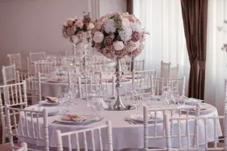
Fotografie a locației · Sursa fotografiei Constanța · Sală de nunți
Iani Events Restaurant Nunta, Botez Constanta
Mirii care au ținut nunta la Iani Events descriu un meniu cu patru feluri și o echipă coordonată de șeful de sală.
Aleea Ciuleandra 3, 900001 Constanța+40 723 533 898Hartă ilustrată Constanța · Bed & Breakfast
Vila Magica
Dacă rezervi în numele mai multor familii, poți evita neclaritățile cerând dinainte în scris condițiile de sosire, plecare și folosire a spațiilor comune.
Strada Topoloveni 10A, 000936 Constanța+40 721 216 438
Hartă ilustrată Eforie Nord · Pavilion pe plajă
Plaja Steaua de mare
La Plaja Steaua de Mare din Eforie Nord, un oaspete descrie șezlongurile, un fileu pentru volei, un bar și locul de joacă al copiilor.
Bulevardul Falezei 2, 905350 Eforie Nord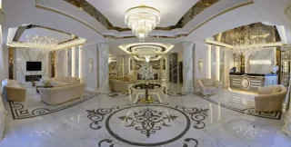
Fotografie a locației · Sursa fotografiei Constanța · Hotel
Ten Hotel
La Ten Hotel, un oaspete din Constanța descrie balconul mic al camerei spre stradă și micul dejun servit la ultimul etaj.
Strada Traian 53, 900725 Constanța+40 731 972 552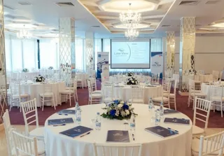
Fotografie a locației · Sursa fotografiei Constanța · Local pentru evenimente
Lake View Constanta
Lake View Constanta, Constanța. La Lake View Constanța, cununia pe malul lacului și petrecerea în salon apar distinct în prezentarea locației.
Bulevardul Mamaia 283, 900552 Constanța+40 770 230 377Hartă ilustrată Constanța · Local pentru evenimente
Restaurant Parc Mamaia Nord
Restaurant Parc Mamaia Nord. Dacă veniți la o degustare, cereți să încercați preparatele din meniul de nuntă și să vedeți exact zona în care se vor servi.
900001 Constanța+40 724 418 218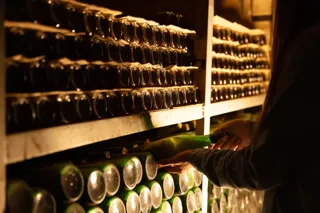
Fotografie a locației · Sursa fotografiei Murfatlar · Cramă
Murfatlar Vinul Romania
Murfatlar Vinul Romania. Într-o vizită din 2026 la Murfatlar, un participant a urmărit mai întâi prezentarea cramei și a degustat apoi șase vinuri.
Strada Murfatlarului 1, 905100 Murfatlar+40 241 706 850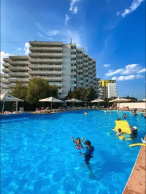
Fotografie a locației · Sursa fotografiei Constanța · Hotel
Hotel Savoy Mamaia
Un oaspete la Savoy Mamaia descrie camere în care au încăput trei persoane, piscina de lângă hotel și servirea de pe plajă în cadrul unui sejur all inclusive.
Bulevardul Mamaia, 900001 Constanța+40 241 606 900
Fotografie a locației · Sursa fotografiei Eforie Nord · Hotel
Hotel Grand
Hotel în Eforie Nord cu piscină interioară, saună și jacuzzi, nota 4,1. Mic dejun pe tichete de 40 lei; ce să verifici pentru invitați.
Bulevardul Republicii 1, 905350 Eforie Nord+40 241 742 781Hartă ilustrată Constanța · Restaurant
Restaurant Il Castello
Restaurant Il Castello, Constanța. Un oaspete care a ajuns cu trenul la Il Castello spune că a parcurs pe jos un drum foarte scurt de la gară.
Strada Labirint 35 c, 900178 Constanța+40 735 362 101Fotografie a locației · Sursa fotografiei Vama Veche · Restaurant
Club D'or
Hotel cu piscină în Vama Veche, cu site care pomenește nunți; recenziile din 2026 semnalează mucegai și mâncare slabă, deci verifică totul.
Strada Ion Creangă 15, 905500 Vama Veche+40 743 335 114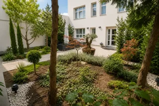
Fotografie a locației · Sursa fotografiei Constanța · Hotel
Hotel London
Hotel simplu în Constanța, la circa 10 minute de mers de mare, cu grădină și terasă. Recenzii critice la micul dejun și la parcare.
Strada Viceamiral Ioan Murgescu nr 42, 900567 Constanța+40 241 697 638
Hartă ilustrată Eforie Nord · Restaurant
Complex Debarcader
Restaurant cu terasă spre mare în Eforie Nord, nota 3,9 din 3.708 evaluări. Recenzii critice despre servire și mâncare; ce să verifici.
Bulevardul Tudor Vladimirescu, 905350 Eforie Nord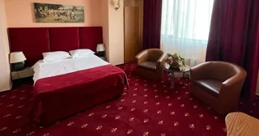
Fotografie a locației · Sursa fotografiei Constanța · Hotel
Hotel Class
Hotel Class, Constanța. La Class, un client care a rezervat o noapte a ridicat probleme privind starea obiectelor sanitare din cameră.
Strada Răscoalei 1907 1, 900178 Constanța+40 726 684 796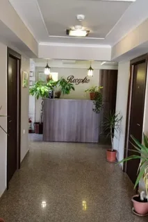
Fotografie a locației · Sursa fotografiei Constanța · Hotel
Pensiunea La Iani
Pentru Pensiunea La Iani, un vizitator descrie în Constanța o intrare prin curte și o scară metalică în spirală.
Aleea Ciuleandra 3, 900001 Constanța+40 770 276 260
Hartă ilustrată Eforie Nord · Restaurant
Restaurant Grand
Restaurant Grand, Eforie Nord. Dacă data nunții cade în afara verii, întrebați ce preparate și ce echipă de servire sunt disponibile atunci.
Bulevardul Republicii 1, 905350 Eforie Nord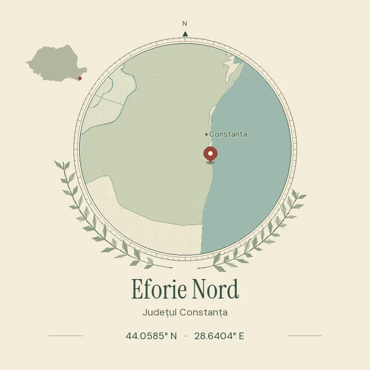
Hartă ilustrată Eforie Nord · Restaurant
Cherhanaua “La Stuf”
Cherhanaua “La Stuf”, Eforie Nord. La o cină de iunie, un vizitator a stat la terasa orientată spre mare și a găsit locul mai puțin aglomerat.
Aleea Belona, 905350 Eforie Nord+40 747 047 373
Fotografie a locației · Sursa fotografiei Eforie Nord · Hotel
Hotel Club Dunărea
Complex în Eforie Nord cu grădină de 21.000 m², piscină și bucătărie fără gluten separată. Recenzii împărțite: ce să verifici la camere.
Strada Dunării, 905350 Eforie Nord+40 747 076 076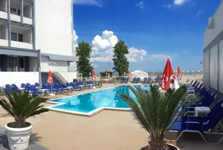
Fotografie a locației · Sursa fotografiei Constanța · Hotel
Hotel Parc
Hotel pe plaja din Mamaia cu restaurant pe terasa de la etajul 15. Nota 3,8: priveliște lăudată, camere mici criticate în 2026.
Hotel Parc, Bulevardul Mamaia, 900001 Constanța+40 241 831 326Hartă ilustrată Vama Veche · Beach club
AMUN Beach Bar & Club
AMUN Beach Bar & Club, Vama Veche. Un client al AMUN din Vama Veche descrie un cocktail băut privind marea, cu muzică și lumină caldă.
Strada Falezei, 907163 Vama Veche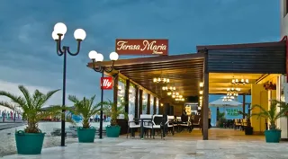
Fotografie a locației · Sursa fotografiei Constanța · Restaurant
Terasa Maria
O persoană care a luat masa la Terasa Maria își amintește muzica live și o seară în care servirea a depins mult de o singură ospătăriță.
Unnamed Road, 900001 Constanța+40 731 351 476Hartă ilustrată Vama Veche · Restaurant în care se poate dansa
La Canapele Deja Vu
La Canapele Deja Vu, un vizitator a ales localul din Vama Veche tocmai pentru pește și a avut alte așteptări privind prospețimea și garniturile.
Strada Albatros, 907163 Vama VecheFotografie a locației · Sursa fotografiei Constanța · Cazare în regim hotelier
Hotel Olt
Apropierea de plajă, șezlongul și parcarea incluse în rezervarea sa au fost avantajele remarcate de un oaspete la Hotel Olt.
900001 Constanța+40 241 831 745
Fotografie a locației · Sursa fotografiei Eforie Nord · Local pentru evenimente
Hotel Belvedere
Hotel Belvedere. Un vizitator la Belvedere din Eforie Nord descrie o baie în care vasul de toaletă era foarte aproape de cabina de duș.
Bulevardul Republicii FN, 905350 Eforie Nord+40 729 998 484Hartă ilustrată Constanța · Castel
CCN
Marcajul CCN de pe Strada Matei Millo din Constanța are doar inițiale în denumire, iar categoria din hartă îl încadrează la castele.
Strada Matei Millo, ConstanțaHartă ilustrată Constanța · Cramă
Viticola SA
Viticola SA, Constanța. O adresă asociată unei întreprinderi de vinificație poate identifica sediul, un punct de vânzare sau producția.
Strada Gării, Constanța+40 723 237 870
Întrebări despre locațiile din județul Constanța
Unde pot dormi invitații în județul Constanța?
În registrul de cazare SITUR găsim Waves (70 de locuri de cazare), Dobrogea Events (20 de locuri de cazare), Villa Edel Constanta (24 de locuri de cazare). Verifică ce camere sunt libere pentru noaptea evenimentului.
Ce spații sunt documentate pentru evenimente în aer liber în județul Constanța?
Urban Hub Constanta — Mese private pe terasă. Diplomatic Mamaia — Petrecere privată pe terasă. Ana Hotels Europa — Cununie și recepție de nuntă în grădină.
Care locație din județul Constanța are cele mai multe evaluări Google?
Terasa cu Ancore are 4.106 evaluări în profilul Google folosit la documentare. Evaluările acoperă și alte experiențe la proprietate, inclusiv vizitele fără eveniment.
Unde apare o intrare accesibilă în județul Constanța?
Profilurile Google indică o intrare accesibilă la Ardealul Restaurant Evenimente & Catering Constanta, Crama Gabai, Kupolla Events. Pentru o cununie în exterior, cere detalii despre traseul dintre intrare și zona cu scaune.